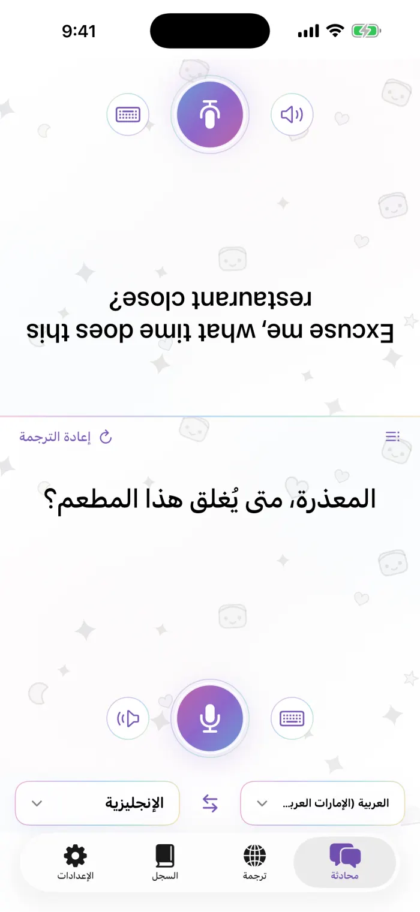
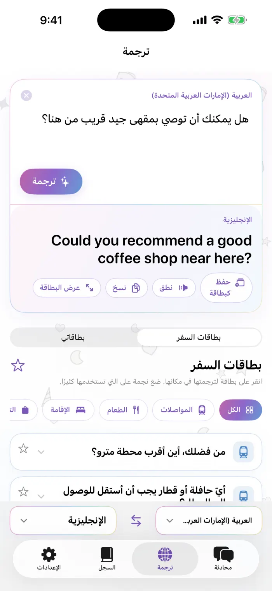
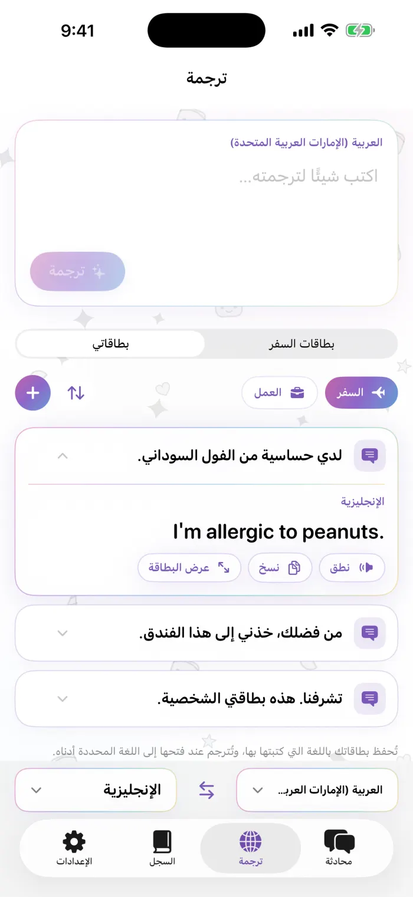
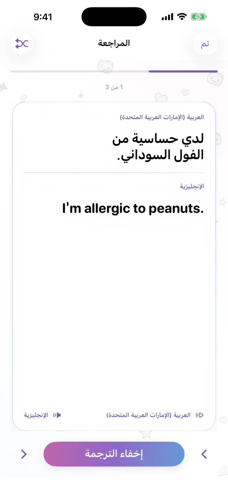

تحدّث وجهًا لوجه
تنقسم الشاشة إلى نصفين وينقلب نصف محدّثك رأسًا على عقب، فتضع الهاتف بينكما بسهولة. تحدّث أو اكتب، ويقرأ كل طرف الترجمة بلغته.
- التعرّف على الكلام على الجهاز
- أعد تشغيل أي جملة
- نطق الترجمات بصوت عالٍ
مترجم لـ iPhone
تحدّث وجهًا لوجه، واحتفظ ببطاقات عباراتك الخاصة، وترجم كل شيء مباشرة على iPhone — حتى بدون إنترنت.
قريبًا على App StoreiPhone · iOS 18 أو أحدث · التنزيل مجاني
لو سمحت، حتى أي ساعة يبقى هذا المطعم مفتوحًا؟
Excuse me, what time does this restaurant close?
جولة قصيرة في التطبيق على جهاز iPhone حقيقي.
تنقسم الشاشة إلى نصفين وينقلب نصف محدّثك رأسًا على عقب، فتضع الهاتف بينكما بسهولة. تحدّث أو اكتب، ويقرأ كل طرف الترجمة بلغته.
اكتب جملة أو الصقها ثم ترجمها. انسخها، أو استمع إليها، أو اعرضها كبطاقة كبيرة بملء الشاشة للشخص الذي أمامك.
احتفظ بالعبارات التي تقولها كثيرًا — للسفر أو للعمل — في بطاقات داخل مجموعات تسمّيها وترتّبها بنفسك. احفظ أي ترجمة أو عنصر من السجل كبطاقة، وستُترجم في المرة القادمة إلى اللغة التي تختارها.
المواصلات والطعام والإقامة والتسوّق والاتجاهات. اضغط على بطاقة لتُترجم فورًا، وأضف نجمة للبطاقات التي تستخدمها كثيرًا.
تُحفظ كل محادثة وترجمة على iPhone، مرتبة حسب اليوم، مع المفضلة. يحوّل وضع المراجعة سجلك إلى بطاقات تعليمية.
تعتمد الترجمة على نماذج Apple التي تعمل على الجهاز. نزّل اللغة مرة واحدة وستعمل دون اتصال بالإنترنت — ولا يُرسَل أي شيء تقوله أو تكتبه إلى أي خادم.
لقطات حقيقية من التطبيق. الأرقام تطابق الملاحظات الموجودة بجانب كل شاشة.




كل ما تحتاجه للتحدث والترجمة مجاني. أما Pro فهو لمن يبني مجموعة بطاقاته الخاصة.
اشتراك أسبوعي أو شهري، أو شراء لمرة واحدة مدى الحياة. يعرض App Store السعر بعملتك المحلية.